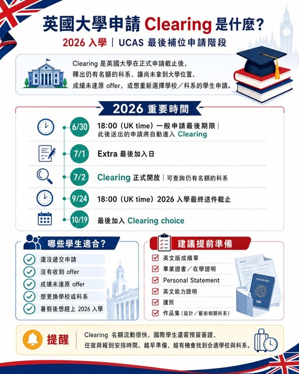

《看懂制度，選對世界》第一集
什麼是英國大學申請 Clearing？
英國 的 每年英國大學在正式申請截止後，仍會有部分科系還有名額，例如： 學生最後沒有接受 offer、成績未達原本條件、學校招生名額尚未招滿，或學生臨時改變志願。

【什麼是英國大學申請「Clearing 清倉」？】 英國 的 每年英國大學在正式申請截止後，仍會有部分科系還有名額，例如： 學生最後沒有接受 offer、成績未達原本條件、學校招生名額尚未招滿，或學生臨時改變志願。這些空缺名額就會在 Clearing 階段釋出，讓還沒有確定大學位置的學生申請。2026 年入學的 Clearing 將於 2026 年 7 月 2 日開放，UCAS 官方說明，Clearing 適用於目前沒有持有大學錄取位置、且符合資格的申請者；課程空缺會顯示在 UCAS Search Tool 中。
2026 年 6 月 30 日 18:00（英國時間） 這是 UCAS 一般申請的最後期限。超過這個時間送出的申請，會自動進入 Clearing。7 月 1 日 最後一天可以在 UCAS 申請中加入 Extra choice。7 月 2 日 Clearing 正式開放，學生可以開始查詢仍有名額的英國大學與科系。9 月 24 日 18:00（英國時間） 2026 年入學申請的最終送件期限。10 月 19 日 最後一天可以加入 2026 年入學的 Clearing choice。哪些學生適合使用 Clearing？
Clearing 特別適合以下幾類學生：
１、還沒有遞交英國大學申請的學生
２、沒有收到任何錄取通知的學生
３、拒絕原本 offer 後，想重新選擇學校或科系的學生
４、成績未達原 offer 條件，需要尋找替代方案的學生
５、原本沒有考慮英國，但暑假後想快速銜接英國大學的學生
６、想尋找仍有名額科系的國際學生 Clearing 階段，很多英國大學、甚至熱門城市的大學，都可能在 Clearing 階段釋出部分科系名額。 . 【對台灣學生而言，Clearing 最大的價值在於：】 可以補救錯過申請時間的情況，也可以在成績出來後重新評估選擇。若學生已有高中成績、英文能力證明、作品集或相關申請資料，Clearing 期間有機會快速與學校確認可申請科系。 但要注意，名額是流動的，熱門科系可能很快額滿。因此學生需要提前準備文件，不能等到 7 月 2 日才開始整理資料。 建議學生提前準備什麼？ Clearing 開放前，建議先準備好：
１、英文版成績單
２、畢業證書或在學證明
３、Personal Statement
４、英文能力證明，如 IELTS、EPT、Duolingo 或學校接受的其他測驗
５、護照
６、作品集，若申請設計、藝術、建築、影視等科系
７、想申請的科系與城市清單 提醒 Clearing 是英國大學申請最後一波重要機會，但它不是隨便選學校，而是要快速判斷：學生目前的成績、英文能力、科系方向、簽證時間與未來升學規劃是否能互相配合。